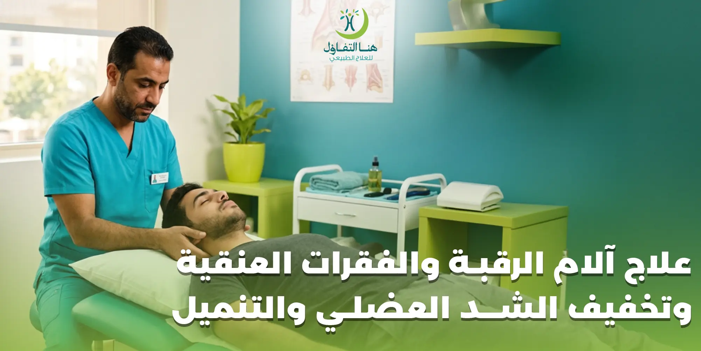

تُعد آلام الرقبة والفقرات العنقية من المشكلات التي قد تؤثر بصورة واضحة على الحركة والقدرة على أداء الأنشطة اليومية، خصوصًا عندما يصاحب الألم شد في العضلات أو امتداده إلى منطقة الكتف والذراع أو ظهور إحساس بالتنميل. وقد يرتبط ألم الرقبة بعوامل متعددة، لذلك تختلف طريقة التعامل معه من حالة إلى أخرى وفق سبب المشكلة وطبيعتها.
وتزداد الحاجة إلى علاج آلام الرقبة والفقرات العنقية عندما يستمر الألم أو يتكرر بصورة تؤثر على النوم أو العمل أو الحركة الطبيعية للرأس والكتفين. وهنا يأتي دور التقييم المتخصص في تحديد طبيعة المشكلة واختيار البرنامج العلاجي والتأهيلي المناسب.
تقدم خدمات العلاج الطبيعي والتأهيل خيارات تساعد على التعامل مع مشكلات الحركة والشد العضلي والألم، مع التركيز على احتياجات كل حالة بدل الاعتماد على برنامج واحد لجميع الأشخاص.
علاج آلام الرقبة والفقرات العنقية
تتكون منطقة الرقبة من فقرات وعضلات وأعصاب وأربطة ومفاصل تعمل معًا للسماح بحركة الرأس ودعمها. وعندما يحدث إجهاد أو مشكلة في إحدى هذه المكونات، قد يشعر الشخص بألم أو تيبس أو صعوبة في تحريك الرقبة.
وقد يظهر ألم الرقبة في صورة:
- ألم موضعي في منطقة الرقبة.
- تيبس وصعوبة في الحركة.
- شد في عضلات الرقبة.
- ألم يمتد إلى الكتف.
- صداع مصاحب لآلام الرقبة لدى بعض الحالات.
- تنميل أو إحساس غير طبيعي في بعض المناطق عند وجود تأثر عصبي.
- زيادة الألم مع بعض الحركات أو الأوضاع.
ولا تعني هذه الأعراض بالضرورة وجود مشكلة واحدة محددة، ولذلك فإن تقييم الحالة مهم قبل اختيار العلاج.
الشد العضلي في الرقبة وعلاقته بالألم
من أكثر المشكلات المصاحبة لآلام الرقبة الشد العضلي، وقد يظهر بعد الجلوس لفترات طويلة أو استخدام الأجهزة الإلكترونية بصورة مستمرة أو اتخاذ وضعية غير مريحة أثناء العمل أو النوم.
وقد يؤدي استمرار الشد إلى زيادة الإحساس بالألم والتيبس، كما يمكن أن يمتد الإحساس إلى منطقة الكتفين.
ولهذا يتضمن التعامل مع بعض حالات آلام الرقبة الاهتمام بالعضلات المحيطة بالرقبة والكتفين، إلى جانب تقييم الحركة والوضعية والعوامل التي قد تساهم في استمرار المشكلة.
علاج آلام الرقبة والكتف
قد لا يبقى ألم الرقبة محصورًا في منطقة الرقبة، فقد يشعر بعض الأشخاص بألم أو ثقل أو شد في الكتف، خصوصًا عندما تكون عضلات الرقبة والكتفين تحت إجهاد مستمر.
وفي هذه الحالات يركز التقييم على:
- مدى حركة الرقبة.
- حركة الكتفين.
- مستوى الشد العضلي.
- طبيعة الألم ومكانه.
- الحركات التي تزيد الأعراض.
- وجود تنميل أو أعراض عصبية مصاحبة.
وبناءً على نتيجة التقييم يمكن تحديد ما إذا كانت الحالة تحتاج إلى جلسات علاج طبيعي أو برنامج تأهيلي أو تقييم طبي إضافي.
التنميل المصاحب لآلام الرقبة
وجود تنميل مع ألم الرقبة يستحق الاهتمام، خصوصًا إذا كان الإحساس يمتد إلى الكتف أو الذراع أو يصاحبه ضعف في الحركة.
ولا ينبغي افتراض أن كل حالة تنميل ناتجة عن السبب نفسه؛ فالأسباب المحتملة متعددة، وتحديدها يحتاج إلى تقييم مناسب.
ولهذا فإن العلاج لا يبدأ بمجرد التعامل مع الألم، وإنما من المهم التعرف على طبيعة الأعراض ومكانها ومدتها والعوامل المصاحبة لها.
تنبيه مهم:
في الحالات التي تتطلب تقييمًا طبيًا، ينبغي الرجوع إلى الطبيب المختص قبل أو بالتزامن مع أي برنامج علاجي.
العلاج الطبيعي لآلام الفقرات العنقية
يمكن أن يكون العلاج الطبيعي جزءًا من خطة التعامل مع بعض حالات آلام الرقبة والفقرات العنقية، خصوصًا عندما تكون المشكلة مرتبطة بالحركة أو الشد العضلي أو ضعف بعض العضلات.
ويختلف البرنامج من شخص إلى آخر، فقد يركز على الحركة، أو المرونة، أو تقوية العضلات، أو تحسين الوضعية، أو تقليل العوامل التي تزيد الألم.
ولا توجد جلسة واحدة أو تقنية واحدة مناسبة لجميع حالات آلام الرقبة، ولذلك يبدأ البرنامج المناسب بعد تقييم الحالة.
تقييم حركة الرقبة
تقييم الحركة من العناصر المهمة عند التعامل مع آلام الرقبة.
وقد يلاحظ المراجع أن بعض الحركات أصبحت أصعب من المعتاد، مثل:
- الالتفات إلى أحد الجانبين.
- تحريك الرأس إلى أعلى أو أسفل.
- الحفاظ على وضعية معينة لفترة طويلة.
- الحركة أثناء العمل.
- النوم في بعض الأوضاع.
يساعد تقييم مدى الحركة على تكوين صورة أوضح عن طبيعة المشكلة، كما يمكن استخدامه لمتابعة التغيرات التي تحدث أثناء البرنامج التأهيلي.
تحسين مرونة عضلات الرقبة والكتفين
عندما يكون الشد العضلي أحد العوامل المصاحبة للألم، قد يتضمن البرنامج العلاجي تمارين وحركات تهدف إلى تحسين المرونة والحركة وفق ما يناسب الحالة.
ولا يفضل تطبيق تمارين الرقبة بصورة عشوائية، خصوصًا عند وجود ألم شديد أو تنميل أو أعراض تمتد إلى الذراع.
نصيحة مهمة:
التمرين الذي يناسب حالة معينة قد لا يكون مناسبًا لحالة أخرى، ولذلك يجب أن يتم تحديد التمارين وفق تقييم المختص.
وضعية الجلوس وتأثيرها على آلام الرقبة
يقضي الكثير من الأشخاص ساعات طويلة أمام الكمبيوتر أو الهاتف، وقد يؤدي الحفاظ على وضعية واحدة لفترة طويلة إلى زيادة الضغط والإجهاد على منطقة الرقبة والكتفين.
ومن العلامات التي قد تظهر مع الجلوس الطويل:
- تيبس الرقبة.
- الشعور بثقل في الكتفين.
- شد العضلات.
- ألم يزداد مع نهاية يوم العمل.
- الحاجة المتكررة إلى تحريك الرقبة.
ولهذا فإن علاج المشكلة لا يعتمد فقط على الجلسة العلاجية، بل من المهم أيضًا الانتباه إلى العادات اليومية التي قد تساهم في استمرار الأعراض.
آلام الرقبة بسبب استخدام الهاتف
الاستخدام الطويل للهاتف مع انحناء الرأس إلى الأسفل قد يزيد الإجهاد الواقع على منطقة الرقبة والكتفين.
ومع تكرار هذه الوضعية لفترات طويلة قد يشعر الشخص بتيبس أو ألم في الرقبة، خصوصًا إذا كان لا يغير وضعية الجسم أو يأخذ فترات راحة أثناء الاستخدام.
لذلك من المفيد تنظيم فترات استخدام الأجهزة، وتغيير الوضعية بصورة مستمرة، وعدم البقاء لفترات طويلة في وضعية واحدة.
آلام الرقبة والصداع
قد يرتبط الصداع لدى بعض الأشخاص بمشكلات أو شد في منطقة الرقبة، لكن الصداع له أسباب متعددة، ولذلك لا ينبغي اعتبار كل صداع ناتجًا عن الفقرات العنقية.
عندما يجتمع ألم الرقبة مع الصداع، يمكن أن يساعد تقييم الرقبة والحركة والعضلات في معرفة ما إذا كانت هناك عوامل عضلية أو حركية مصاحبة.
تنبيه:
في حالة وجود صداع متكرر أو شديد أو غير معتاد، يكون التقييم الطبي مهمًا لتحديد السبب.
آلام الرقبة التي تمتد إلى الكتف
من الشكاوى الشائعة لدى بعض الأشخاص أن يبدأ الألم في الرقبة ثم يظهر في الكتف، أو أن يشعر الشخص بشد مستمر بين الرقبة والكتف.
وهنا من المهم تقييم:
- • الرقبة
- • الكتف
- • حركة الطرف العلوي
- • وجود أو عدم وجود أعراض عصبية
لأن الألم الممتد لا يعني دائمًا وجود مشكلة في العضلات فقط، وقد يحتاج بعض الأشخاص إلى تقييم طبي أكثر شمولًا.
متى تحتاج آلام الرقبة إلى تقييم متخصص؟
يفضل الحصول على تقييم متخصص عندما يكون الألم مستمرًا أو متكررًا أو مصحوبًا بأعراض أخرى.
ومن الحالات التي تستدعي اهتمامًا أكبر:
- ألم شديد أو متزايد.
- تنميل مستمر.
- ضعف في الذراع أو اليد.
- ألم ينتشر إلى الذراع.
- فقدان واضح في القدرة على الحركة.
- ألم بعد إصابة قوية.
- أعراض جديدة وغير معتادة.
تنبيه هام:
في حال ظهور أعراض عصبية شديدة أو مفاجئة، ينبغي طلب التقييم الطبي بصورة عاجلة.
برنامج تأهيل آلام الرقبة
قد يحتاج بعض الأشخاص إلى برنامج تأهيلي بدل الاعتماد على جلسة منفردة، خصوصًا إذا كانت المشكلة مستمرة أو أثرت على الحركة.
ويهدف البرنامج التأهيلي إلى التعامل مع العوامل المرتبطة بالحالة، وقد يتضمن وفق التقييم:
- تمارين الحركة.
- تمارين المرونة.
- تقوية العضلات المناسبة.
- تحسين التحكم الحركي.
- التدريب على الوضعيات الصحيحة.
- إرشادات مرتبطة بالأنشطة اليومية.
- متابعة تطور الحالة.
ويتم تعديل البرنامج بحسب استجابة الشخص وتطور الأعراض.
تقوية عضلات الرقبة والكتفين
تساعد العضلات المحيطة بالرقبة والكتفين في دعم الرأس والمساهمة في الحركة الطبيعية.
وعندما تكون بعض العضلات ضعيفة أو لا تعمل بكفاءة، قد تظهر صعوبات مرتبطة بالحركة أو تحمل الوضعيات لفترات طويلة.
ولهذا قد يتضمن التأهيل تمارين مخصصة لتقوية العضلات، لكن اختيار التمارين وعدد مرات تكرارها يعتمد على حالة الشخص.
تنبيه:
لا ينصح بتحميل الرقبة بتمارين قوية من تلقاء النفس، خصوصًا عند وجود ألم أو تنميل.
علاج تيبس الرقبة وصعوبة الحركة
تيبس الرقبة قد يجعل الأنشطة اليومية أكثر صعوبة، مثل الالتفات أثناء القيادة أو النظر إلى أحد الجانبين أو الحفاظ على وضعية مريحة أثناء العمل.
ويبدأ التعامل مع التيبس بفهم سببه، فقد يكون مرتبطًا بشد عضلي أو إجهاد أو مشكلة أخرى تحتاج إلى تقييم.
وبعد تحديد السبب يمكن وضع برنامج يركز على استعادة الحركة بصورة تدريجية وآمنة.
آلام الرقبة أثناء النوم
طريقة النوم قد تؤثر على شعور الشخص بالراحة في منطقة الرقبة.
وقد يستيقظ بعض الأشخاص وهم يشعرون بالتيبس أو الألم بعد النوم في وضعية غير مريحة.
ومن الأمور التي يمكن الانتباه إليها:
- • وضعية النوم.
- • ارتفاع الوسادة.
- • المحافظة على وضع مريح للرأس والرقبة.
- • تجنب النوم في وضعية تسبب ألمًا واضحًا.
- • تغيير الوسادة إذا أصبحت غير مناسبة.
وفي حال استمرار الألم رغم تعديل وضعية النوم، فمن الأفضل تقييم الحالة بدل اعتبار الوسادة السبب الوحيد.
آلام الرقبة لدى مستخدمي الكمبيوتر
الموظفون والطلاب والأشخاص الذين يعملون أمام الكمبيوتر لفترات طويلة قد يكونون أكثر عرضة للشعور بإجهاد الرقبة والكتفين بسبب الثبات على وضعية واحدة.
لذلك من المهم تنظيم مكان العمل بحيث يكون:
- • مستوى الشاشة مناسبًا.
- • الكرسي داعمًا.
- • الذراعان في وضع مريح.
- • الظهر مسنودًا.
- • هناك فترات راحة وحركة خلال يوم العمل.
وتساعد هذه العادات على تقليل العوامل التي قد تزيد الإجهاد العضلي، لكنها لا تغني عن التقييم عندما تكون الأعراض مستمرة.
خطوات يومية تساعد على تقليل إجهاد الرقبة
إلى جانب البرنامج العلاجي المناسب، يمكن الاهتمام ببعض العادات اليومية التي تقلل من العوامل التي تزيد إجهاد الرقبة.
أخذ فترات راحة من الجلوس
لا يفضل البقاء في نفس الوضعية لفترات طويلة، خصوصًا أمام الكمبيوتر.
تغيير وضعية الجسم
الحركة المنتظمة أفضل من البقاء ثابتًا لساعات.
تنظيم استخدام الهاتف
رفع الهاتف إلى مستوى أكثر راحة قد يقلل الحاجة إلى إبقاء الرأس منخفضًا لفترات طويلة.
الاهتمام ببيئة العمل
ضبط الكرسي والشاشة ومكان لوحة المفاتيح يساعد على توفير وضعية أكثر راحة.
النوم في وضعية مريحة
إذا كانت وضعية النوم تسبب الألم بصورة متكررة، فمن المفيد مراجعتها.
علاج آلام الرقبة والكتف ضمن خطة متكاملة
عندما يكون الألم في الرقبة والكتف معًا، فمن المهم عدم التعامل مع كل منطقة بشكل منفصل دون النظر إلى الحركة العامة.
فالرقبة والكتف والجزء العلوي من الظهر يعملون ضمن منظومة حركية واحدة، ولذلك قد يتضمن التقييم النظر إلى حركة هذه المناطق معًا.
وقد يساعد البرنامج التأهيلي المناسب على تحسين الحركة وتقليل العوامل التي تزيد الإجهاد، وفق حالة كل شخص.
ماذا تتوقع خلال تقييم آلام الرقبة؟
يبدأ التقييم عادةً بالتعرف على طبيعة المشكلة والأعراض التي يشعر بها المراجع.
وقد تشمل المعلومات المهمة:
- متى بدأ الألم؟
- أين يتركز؟
- هل ينتشر إلى الكتف أو الذراع؟
- هل يوجد تنميل؟
- ما الحركات التي تزيد الألم؟
- هل يؤثر على النوم؟
- هل توجد إصابة سابقة؟
- ما طبيعة العمل والنشاط اليومي؟
بعد ذلك يتم تقييم الحركة والوظائف المرتبطة بالمنطقة لتحديد الخطة المناسبة.
متى يجب عدم الاكتفاء بالعلاج الطبيعي؟
هناك حالات تحتاج إلى تقييم طبي أولًا، خصوصًا إذا كان ألم الرقبة مرتبطًا بإصابة قوية أو أعراض عصبية واضحة أو ضعف في الأطراف.
كما أن ظهور أعراض شديدة أو مفاجئة يستوجب الحصول على رعاية طبية مناسبة بدل تأجيل التقييم والاعتماد على العلاج الذاتي.
العلاج الطبيعي والتأهيل يمكن أن يكونا جزءًا مهمًا من خطة العلاج في الحالات المناسبة، لكن تحديد ملاءمتهما يبدأ من التقييم الصحيح.
الأسئلة الشائعة عن علاج آلام الرقبة والفقرات العنقية
ما أفضل علاج لآلام الرقبة والفقرات العنقية؟
يعتمد العلاج على سبب الألم وطبيعة الحالة. قد تستفيد بعض الحالات من العلاج الطبيعي والتأهيل، بينما تحتاج حالات أخرى إلى تقييم طبي أو خيارات علاجية مختلفة.
هل العلاج الطبيعي يساعد في آلام الرقبة؟
يمكن أن يكون العلاج الطبيعي جزءًا من خطة علاج بعض حالات آلام الرقبة، خاصة عندما تكون المشكلة مرتبطة بالحركة أو الشد العضلي، ويتم تحديد البرنامج المناسب بعد تقييم الحالة.
هل شد عضلات الرقبة يسبب ألم الكتف؟
قد يرتبط شد عضلات الرقبة والكتفين بظهور ألم أو ثقل في منطقة الكتف لدى بعض الأشخاص، لكن تحديد سبب الألم يحتاج إلى تقييم.
هل تنميل اليد أو الذراع مع ألم الرقبة يحتاج إلى تقييم؟
نعم، وجود التنميل مع ألم الرقبة، خصوصًا إذا كان مستمرًا أو مصحوبًا بضعف، يستحق تقييمًا متخصصًا لتحديد السبب.
هل الجلوس أمام الكمبيوتر يسبب آلام الرقبة؟
الجلوس لفترات طويلة مع وضعية غير مريحة قد يزيد إجهاد عضلات الرقبة والكتفين، لذلك من المهم ضبط وضعية العمل والحركة بشكل منتظم.
هل استخدام الهاتف يؤثر على الرقبة؟
الاستخدام المطول للهاتف مع إبقاء الرأس منخفضًا قد يزيد إجهاد الرقبة والكتفين لدى بعض الأشخاص.
هل كل آلام الرقبة سببها الفقرات؟
لا، فآلام الرقبة لها أسباب متعددة، وقد تكون مرتبطة بالعضلات أو المفاصل أو عوامل أخرى، ولذلك لا يمكن تحديد السبب من الألم وحده.
كم جلسة علاج طبيعي أحتاج لعلاج الرقبة؟
لا يوجد عدد ثابت يناسب جميع الحالات. يحدد عدد الجلسات وفق طبيعة المشكلة واستجابة المراجع للبرنامج وأهداف العلاج.
هل يمكن علاج آلام الرقبة في المنزل؟
بعض الحالات البسيطة قد تتحسن مع تعديل النشاط والوضعية والراحة المناسبة، لكن استمرار الألم أو وجود تنميل أو ضعف يستدعي تقييمًا متخصصًا.
متى تكون آلام الرقبة خطيرة؟
يجب الاهتمام بصورة أكبر عند وجود ألم شديد أو بعد إصابة قوية، أو عند ظهور ضعف أو تنميل مستمر أو أعراض عصبية جديدة، وفي هذه الحالات ينبغي الحصول على تقييم طبي مناسب.
احجز جلستك في مركز هنا التفاؤل ببيشة
إذا كنت تعاني من آلام الرقبة، الشد العضلي، التيبس، أو التنميل، فلا تؤجل التقييم. يساعد التشخيص المبكر على وضع خطة علاجية مناسبة قد تساهم في تخفيف الألم وتحسين الحركة واستعادة جودة الحياة.